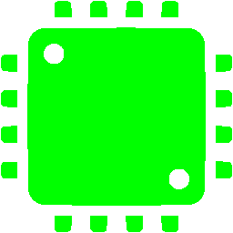

<mat-toolbar>
  <div class="navbar">
    <ng-container>
      <div class="logo-container" *ngIf="!(authService.loggedIn$ | async)">
        
      </div>
      <div class="logo-container" *ngIf="authService.loggedIn$ | async">
        
      </div>
    </ng-container>
    <div class="links-container">
      <a class="home" routerLink="/">Home</a>
      <a class="math" routerLink="/math">Math</a>
      <a class="programming" routerLink="/programming">Programming</a>
    </div>
    <ng-container>
      <button
        *ngIf="!(authService.loggedIn$ | async)"
        class="sign-in-button"
        (click)="openSignInDialogButtonClick()"
      >
        Sign in
      </button>
      <button
        *ngIf="authService.loggedIn$ | async"
        class="sign-in-button"
        (click)="openSignInDialogButtonClick()"
      >
        Sign out
      </button>
    </ng-container>
  </div>
</mat-toolbar>
